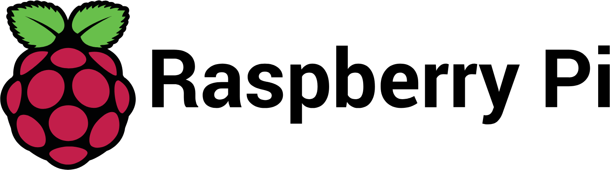
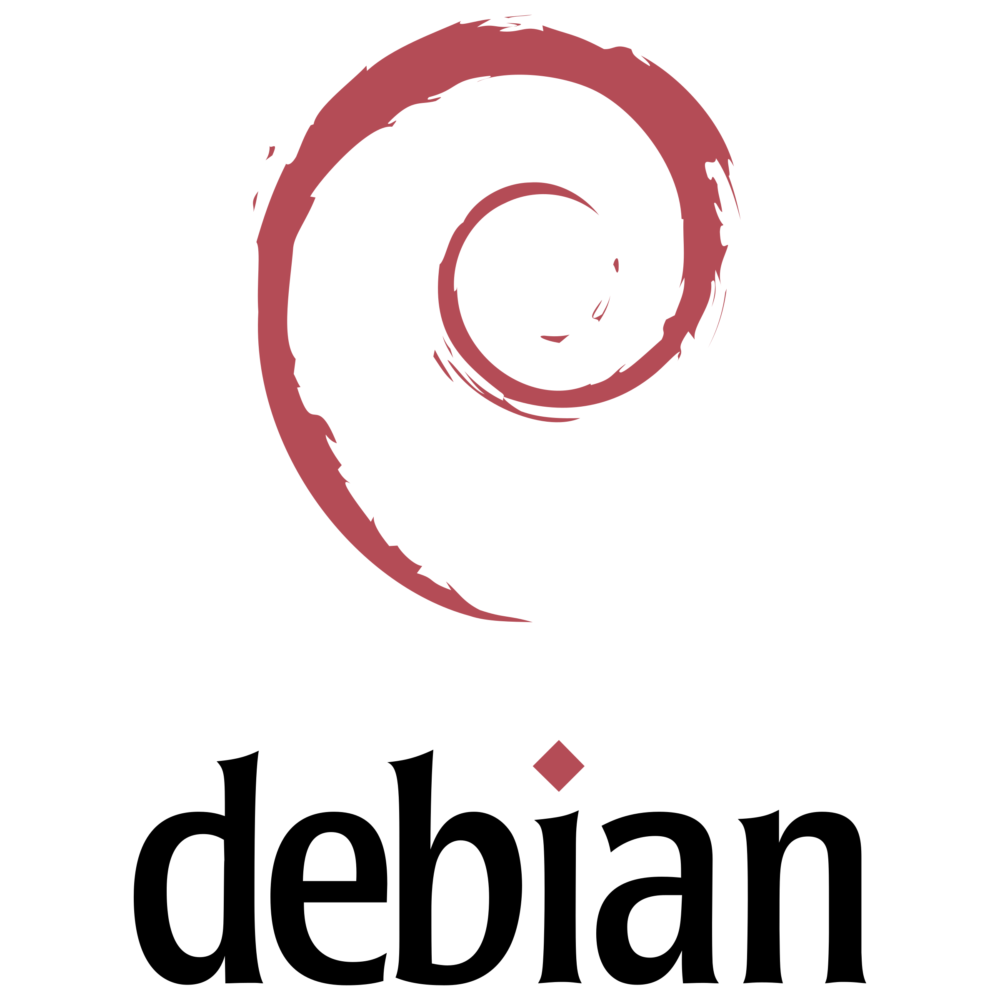
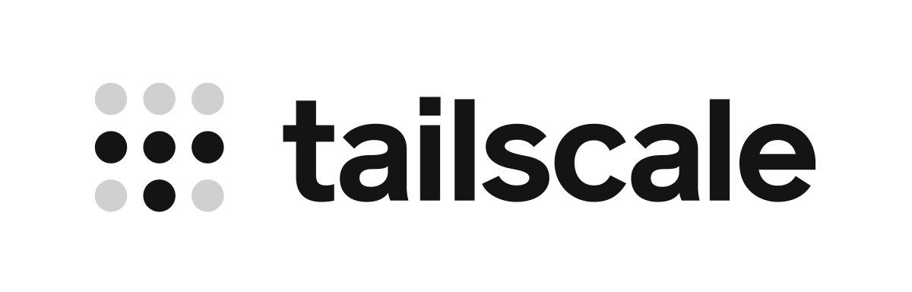
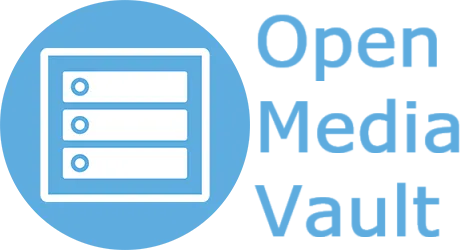
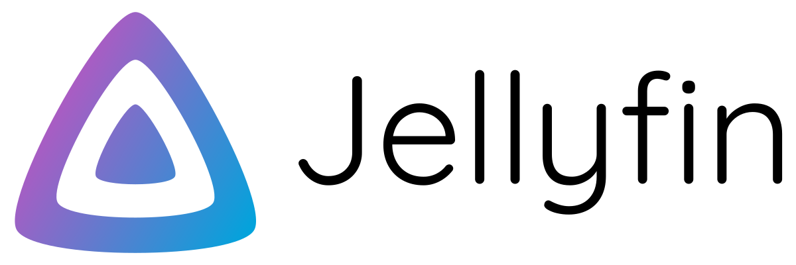
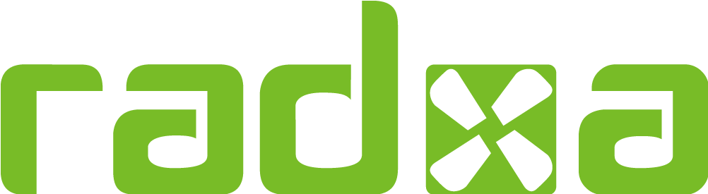

Pi-NAS — Self-Hosted Home Server
Fully automated media pipeline and personal cloud, running 24/7 on ARM hardware
System Architecture Diagram
The Storage Architecture
Main Array (2TB)
OpenMediaVault manages mounting, Btrfs filesystem, permissions, and SMB/NFS shares. All Docker containers bind-mount their volumes here. All media output lands here.
Backup Vault (120GB)
Not for media — strategically used for what matters: Docker compose files, container appdata and config directories (Sonarr databases, Jellyfin watch history), and personal photos and videos. Weekly automated sync via cron + rsync.
# Weekly cron job — backs up critical NAS state
rsync -avh --delete /mnt/main/appdata/ /mnt/backup/appdata/
rsync -avh --delete /mnt/main/photos/ /mnt/backup/photos/Networking & Security — The Tailscale Mesh
- Tailscale runs WireGuard under the hood — authenticates via coordination server, then creates direct encrypted peer-to-peer tunnels between devices.
- The Pi receives a static 100.x.x.x IP — SSH, OMV dashboard, and Jellyfin are all accessible remotely as if on local Wi-Fi.
- Works on the OnePlus phone, laptop, anywhere — no dynamic DNS, no open ports, no exposure.
The Media Pipeline — How It All Connects

The complete automated media pipeline — from indexer search to Jellyfin library, with Discord notifications on completion.
- Indexer Sync — Prowlarr manages all torrent indexers and injects their configs directly into Sonarr and Radarr via API keys.
- The Trigger — When Sonarr or Radarr decides a release matches quality profiles, it fires an API call to qBittorrent with the magnet link and target download directory on the 1.9TB drive.
- Download — qBittorrent handles the transfer to the
/incompletedirectory. - Hardlink Move — Sonarr/Radarr detect completion and perform an atomic hardlink to
/media— instant regardless of file size because source and destination are on the same physical drive. - Library Update — Jellyfin detects the new file via inotify filesystem events, scrapes TMDB/TVDB for posters and metadata, and updates the UI on Google TV.
- Notification — The Discord bot fires a message to a Discord channel: new episode is ready to watch.
Discord Notification Bot
A custom Discord bot connects to the Prowlarr API and sends a notification to a private Discord channel the moment a new episode finishes processing and lands in Jellyfin. No polling, no manual checking.
✅ Added to Jellyfin · Ready to stream
Hardware Specifications
Compute
Raspberry Pi 5 (4GB RAM) — Debian Lite 64-bit, headless
Primary Storage
2TB SATA SSD — main media + Docker data pool
Backup Storage
120GB SATA SSD — configs, appdata, personal photos/videos
SATA Expansion
RADXA Penta SATA HAT
Enclosure
3D-printed 4-bay NAS case (dark marine green, Bambu Lab printer)
Cooling
Active heatsink + fan, physically modified to clear the Pi 5 power connector
Network
Native Gigabit Ethernet (Pi 5 onboard)
Power
12V/5A barrel jack supply
Container Services
Jellyfin
Media server, scrapes TMDB/TVDB metadata, streams to Google TV + phone via Tailscale.
Sonarr
TV automation: monitors RSS feeds, matches quality profiles, triggers downloads.
Radarr
Same as Sonarr, dedicated specifically for automated movie library management.
Prowlarr
Indexer aggregator, pushes configs to Sonarr/Radarr via API, notifies Discord bot.
qBittorrent
Download client, receives API calls with magnet links directly from Sonarr/Radarr.
OpenMediaVault
NAS management: mounts drives, Btrfs filesystem, SMB/NFS shares, permissions, monitoring.






Completed Build Photo

The completed build in its custom 3D-printed enclosure — dark marine green, four-bay, running 24/7.
Technical Challenges & Solutions
PUID/PGID Permission Mapping
All containers share matching user IDs so every service reads and writes as the same system user — ensuring no "permission denied" errors occur as files move across the pipeline.
Hardlink-Compatible Folders
Download and media directories must live on the same physical volume and dataset. The entire directory tree was architected around this constraint from the start to ensure instant transfers.
Cooling Clearance Conflict
The active cooler physically conflicted with the Pi 5 power connector when mounted. This required a delicate physical modification to the heatsink mount to safely fit inside the 3D-printed enclosure.